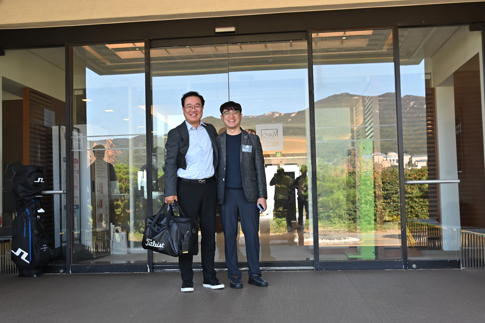
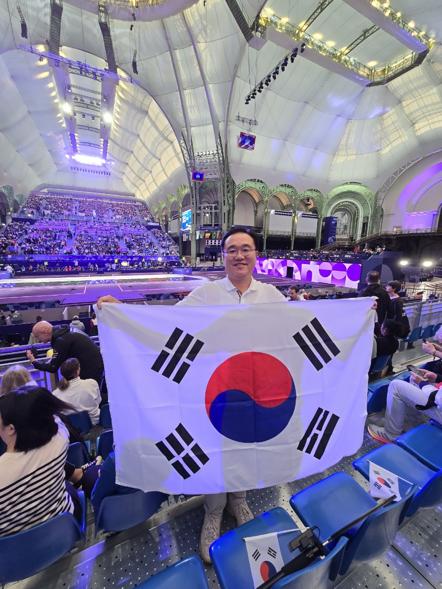
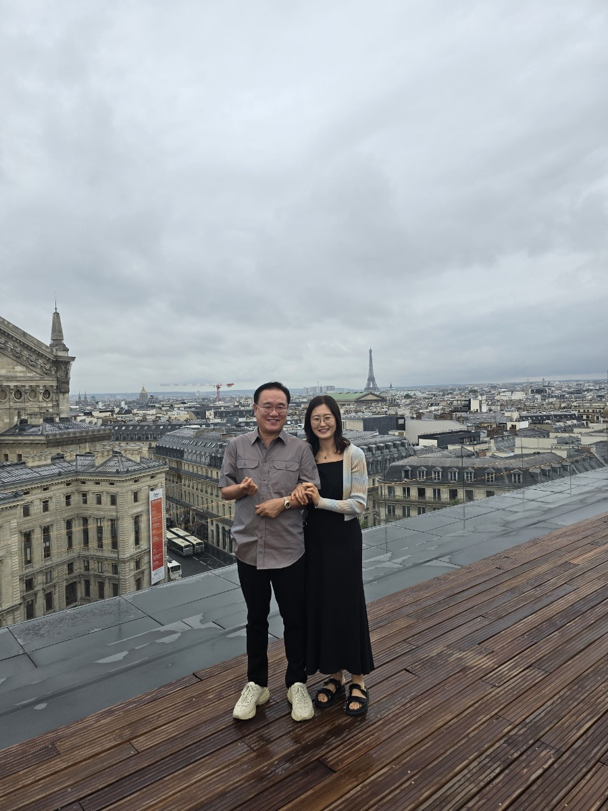
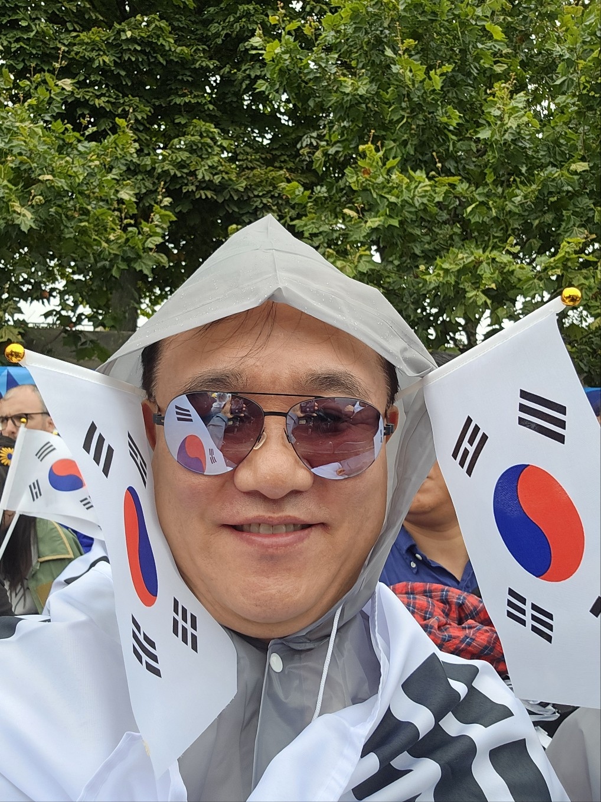
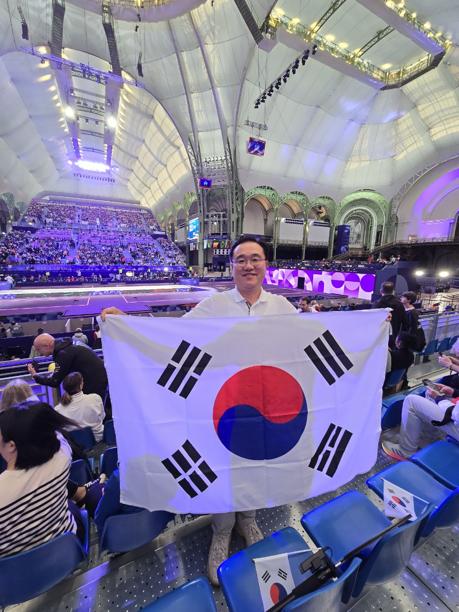
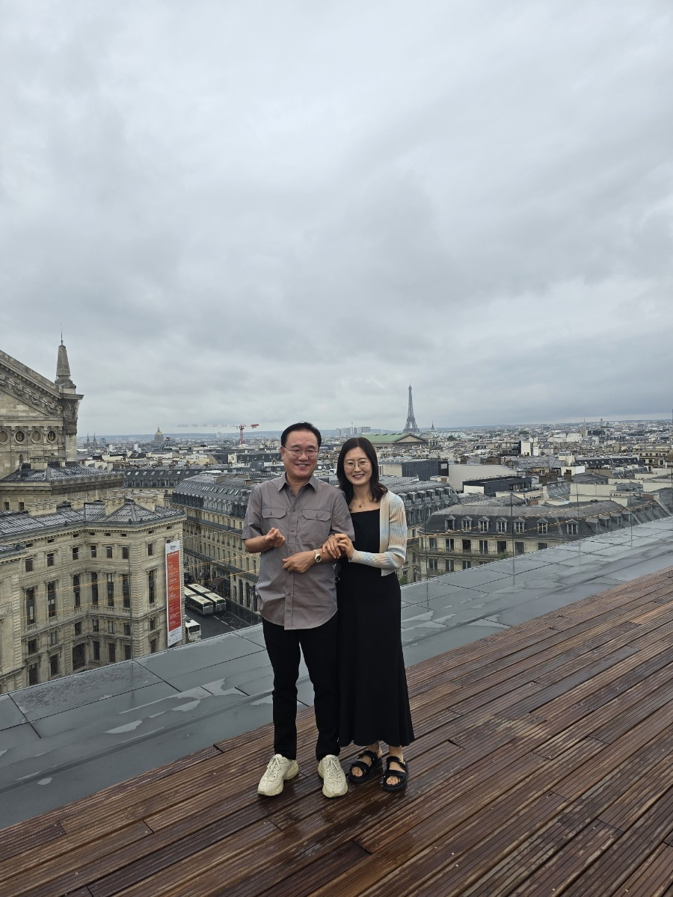
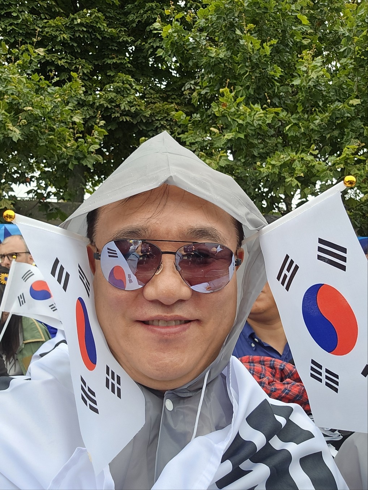

To. 김주연 대표님께
비즈니스에서 사람으로, 성장으로 이어진 인연
To. 김주연 대표님께
2004년, 처음 대표님을 뵈었을 때
그때의 열정과 도전의 모습들, 그리고
2024년의 경영자로서 빛나는 눈빛까지
여전히 저에게는 또렷하게 기억으로 남아 있습니다.
비즈니스의 언어로 시작된 인연이
시간이 지나며 신뢰와 배움의 의미로 깊어졌습니다.
대표님은 언제나 한결같이
‘성장의 방향’을 잃지 않는 분이셨습니다.
그 모습에서 저는 일을 넘어
삶의 태도를 배웠고,
사람의 가치를 배웠습니다.
2026년, 이제 저는 다소 다른 궤도를 걷고 있지만
그 시절의 진심과 배움은
여전히 제 안에서 살아 움직이고 있습니다.
비즈니스의 경계를 넘어
사람의 온기로 이어진 이 인연이
앞으로도 오래도록 흐르길 바랍니다.
저 역시 제 자리에서
대표님께 배운 ‘진정한 성장’을 잊지 않고
꾸준히 더 나은 사람이 되기 위해 걸어가겠습니다.
지난 1년 동안 연락을 드리지 못했지만,
대표님의 앞길에
따뜻한 빛이 늘 함께하길 바라는 마음은
한 번도 멈춘 적이 없었습니다.
2026년 어느 날,
존경과 감사의 마음을 담아
강석우 드림


 




